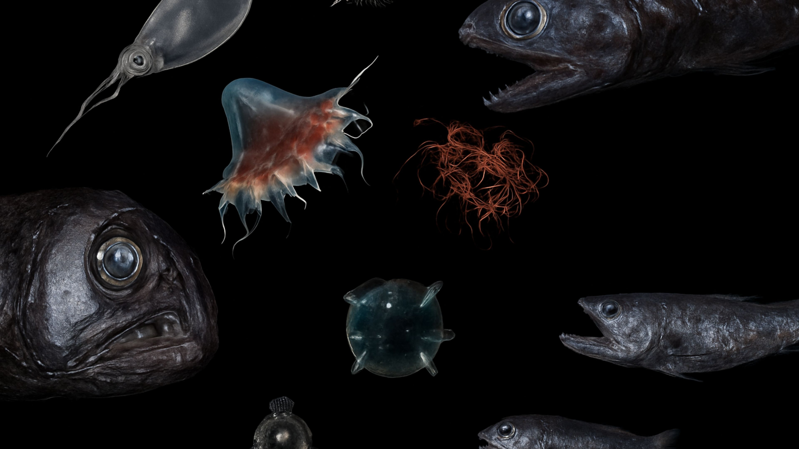
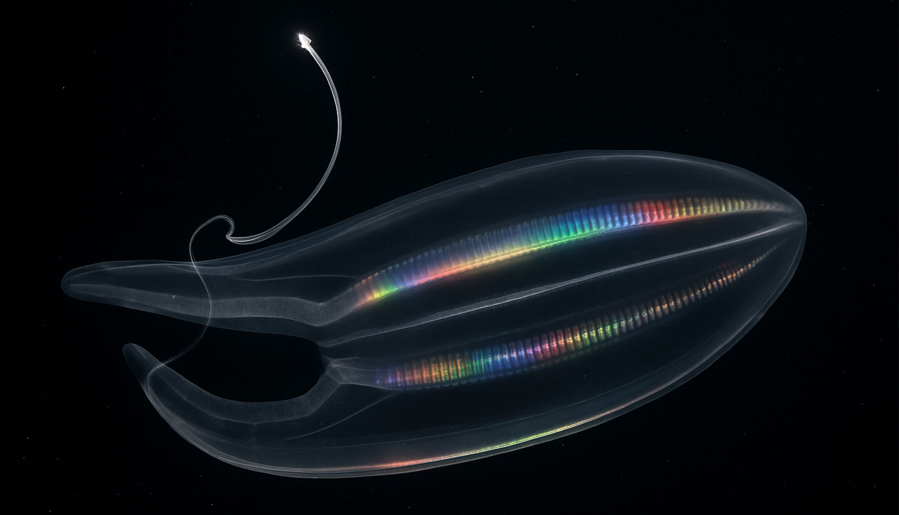
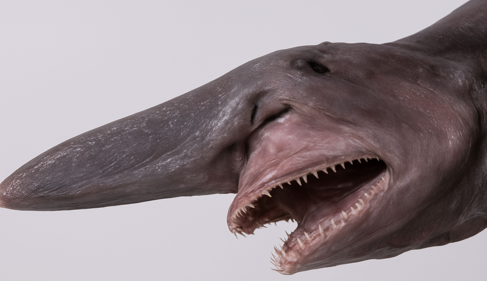

The ocean's twilight zone (200-1,000m) receives only faint blue light, creating a dim world where bioluminescence rules. Lanternfish dominate with glowing spots for communication,
forming massive schools that migrate to the surface nightly to feed.
Strange hatchetfish glide sideways with tubular eyes scanning upward, while vampire squid flash pulsing lights to confuse predators.



This mysterious layer holds more biomass than all commercial fisheries combined,
yet remains largely unexplored. Siphonophores trail glowing tentacles spanning bus-lengths, and dragonfish wield bacterial lures like living fishing rods.
Daily migrations pump carbon to the deep sea, regulating climate while supporting the entire ocean food web